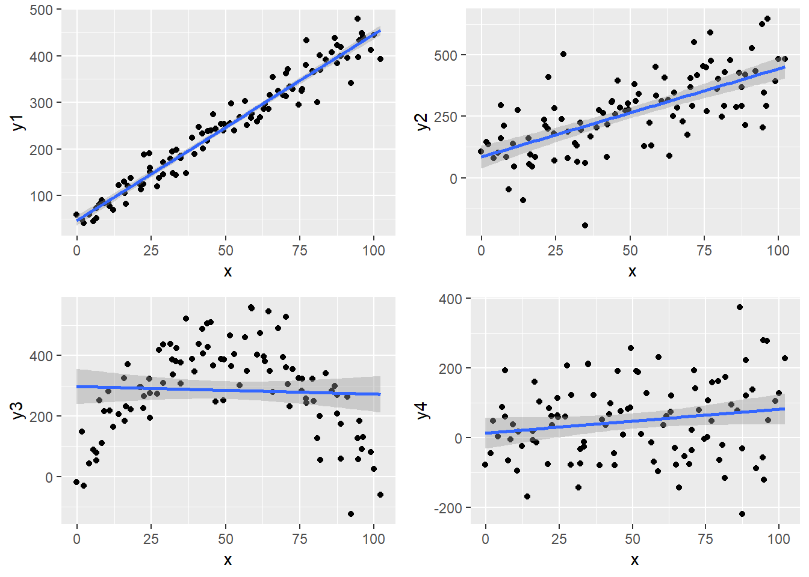
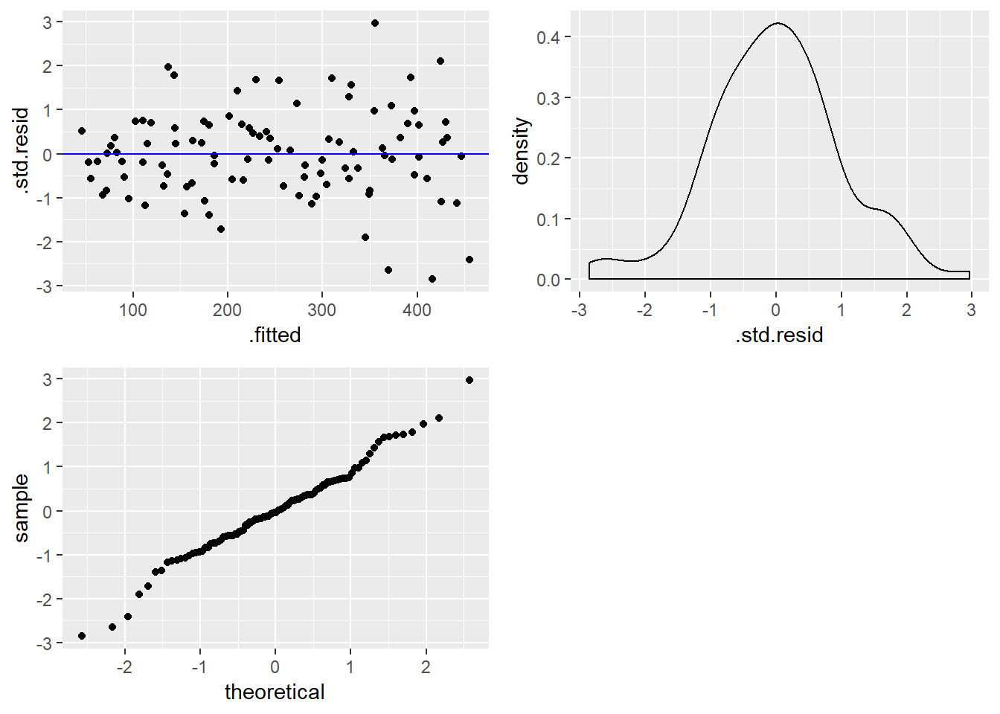
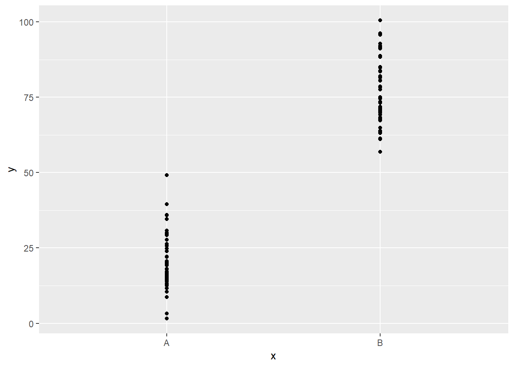
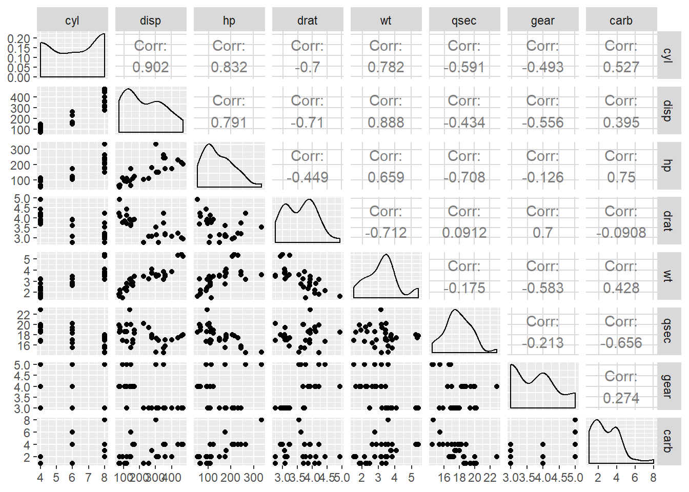
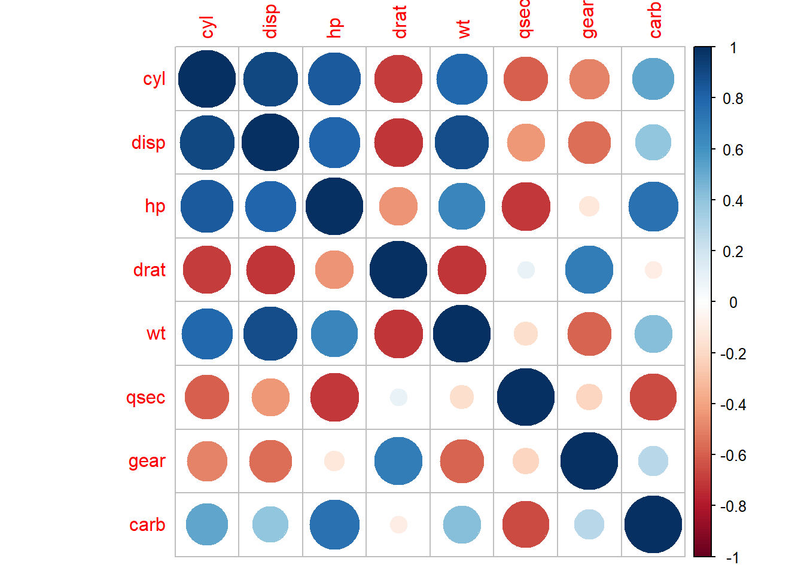

13 Odabrane metode strojnog učenja: regresijska analiza
13.1 Strojno učenje
Strojno učenje je polje računalne znanosti koje se bavi specifičnim načinom programiranja u kojem računalu ne dajemo eksplicitne instrukcije, već očekujemo da računalo samostalno dođe do određenih spoznaja na osnovu odabranih podatkovnih skupova i određene metode “učenja”. Strojno učenje se često dijeli na tzv. “nadzirano učenje” (engl. supervised learning), gdje imamo jasno definirane ulaze i izlaze tj. ciljeve, te “nenadzirano učenje” (engl. unsupervised learning), gdje nemamo unaprijed definirane izlaze već očekujemo da će računalo analizirajući samo ulaze doći do nekih korisnih spoznaja o samim podacima. Postoje i dodatne discipline strojnog učenja kao što su “poticano učenje” (engl. reinforced learning), detekcija anomalija (engl. anomaly detection) itd. koje nećemo dodatno objašnjavati budući da izlaze iz okvira ovog udžbenika.
Pojam strojnog učenja često se povezuje sa pojmom “dubinske analize podataka” (engl. data mining) i “otjrivanja znanja iz podatkovnih skupova” (engl. KDD - knowledge discovery from data). Teško je odrediti u kojoj mjeri se ovi pojmovi preklapaju i koje su njihove točne definicije, budući da se u literaturi često nailazi na različite konvencije koje nisu međusobno konzistentne. Za potrebe ovog udžbenika možemo smatrati da strojno učenje daje svojevrsni “alat” kojeg možemo koristiti za otkrivanje (rudarenje) korisnih informacija iz skupova podataka. Rezultat ovog procesa daje nam izvjesno znanje o domenu kojeg možemo koristiti za donošenje određenih odluka.
U ovoj lekciji mi ćemo se usredotočiti na prikaz jedne vrlo često korištene metode strojnog učenja - linearne regresije - pri čemu ćemo naglasak dati na njezino korištenje u sklopu programskog jezika R.
Linearna regresija je iznimno popularna metoda strojnog učenja koja uz pomoć matematičkih i statističkih temelja opisuje potencijalnu linearnu povezanost varijabli podatkovnog skupa. Ukoliko se pronađe dovoljno dokaza da linearna povezanost postoji, onda smo dobili potencijalno koristan uvid u stvarni odnos dvaju varijabli skupa. Isto tako, dobivena “formula” se može koristiti da se na osnovu poznate vrijednosti jedne varijable (prediktora) s određenom sigurnosti procijeni vrijednost druge (ciljne) varijable.
Iako danas postoje puno naprednije prediktivne metode, linearna regresija se i dalje često koristi kako zbog svoje jednostavnosti, tako i zbog činjenice razumijevanje linearne regresije postavlja čvrste temelje za učenje i razumijevanje naprednijih metoda. Zbog svega toga, linearna regresija predstavlja logičan i vrlo važan prvi korak za ulazak u svijet prediktivne analize.
13.1.1 Jednostavna linearna regresija
Jednostavna linearna regresija je metoda nadziranog strojnog učenja za predviđanje ciljne numeričke varijable uz pomoć linearne funkcije ulazne varijable. Na ovaj način stvaranje prediktivnog modela svodi se na postupak određivanja koeficijenta smjera i odsječka koji će tvoriti jednostavnu formulu za izračun ciljne varijable uz pomoć ulaznog parametra. Budući da se ova metoda svodi na pogađanje navedenih parametara, metoda linearne regresije spada u tzv. “parametarske metode” strojnog učenja, tj. prediktivne analize.
Jednostavna linearna regresija počiva na matematičkim temeljima. Najčešće korištena metoda određivanja koeficijenta smjera i odsječka jest metoda najmanjih kvadrata, koja povlači pravac između točaka grafa tako da je suma kvadrata udaljenosti točaka od pravca (tzv. reziduali) minimalna. Matematičkim postupkom možemo izvesti formulu koja će egzaktno izračunati navedene parametre, pod uvjetom da imamo dovoljno obzervacija.
Motivaciju za provođenje jednostavne linearne regresije često nalazimo tijekom procesa eksploratorne analize podataka, poglavito tijekom vizualizacije dvije numeričke varijable točkastim grafovima. Ukoliko je jedna od tih varijabli nama interesantna kao ciljna varijabla prediktivnog modela, a na grafu povijesnih podataka vidimo kako u međuodnosu s nekom drugom varijablu točke tvore približni oblik pravca, onda se tu radi o očitom kandidatu za metodu jednostavne linearne regresije.
Pogledajmo sljedeći zadatak. U njemu ćemo koristiti “umjetni” podatkovni okvir u kojem imamo ulaznu varijablu x i četiri moguće ciljne varijable y1, y2, y3 i y4. Svaka od tih varijabli nastala je određenom transformacijom ulaza uz dodavanje određene količine šuma. Ideja zadatka jest proučiti odnos između ulazne i mogućih izlaznih varijabli te uočiti koji od tih odnosa je dobar kandidat za jednostavnu linearnu regresiju.
Zadatak 13.1 - uočavanje linearne povezanosti varijabli
# u varijablu `df` učitajte podatke iz datoteke `podaci1.csv`
# proučite učitani podatkovni okvir
# nacrtajte točkaste grafove odnosa varijable
# x sa svakom pojedinom varijablom y iz gornjeg podatkovnog okvira
# svakom grafu dodajte i geometriju zaglađivanja, metoda `lm`
# odgovorite na pitanja:
# na kojim grafovima uočavate moguću linearnu povezanost varijabli?
# koji graf predočava nelinearnu povezanost?
# za koji graf biste mogli reći da su varijable nezavisne?df <- read.csv("podaci1.csv", stringsAsFactors = F, encoding = "UTF-8")
g1 <- ggplot(df, aes(x, y1)) + geom_point() + geom_smooth(method = 'lm')
g2 <- ggplot(df, aes(x, y2)) + geom_point() + geom_smooth(method = 'lm')
g3 <- ggplot(df, aes(x, y3)) + geom_point() + geom_smooth(method = 'lm')
g4 <- ggplot(df, aes(x, y4)) + geom_point() + geom_smooth(method = 'lm')
grid.arrange(g1, g2, g3, g4)
Vizualizacija odnosa dvaju varijabli nam obično daje relativno dobru intuiciju kada možemo očekivati dobro funkcioniranje linearnog modela. Ukoliko želimo numerički opisati snagu linearnog odnosa dvaju varijabli, možemo se koristiti tzv. “Pearson-ovim koeficijentom korelacije” koji poprima vrijednost iz intervala [-1,1] i kod kojeg -1 znači potpunu “negativnu” korelaciju, 1 potpunu pozitivnu, a 0 da korelacije nema. U R-u ovaj koeficijent možemo dobiti uz pomoć funkcije cor.
Izračunajmo koeficijent korelacije za parove ulazne i izlaznih varijabli prikazane na grafovima iz prethodnog zadatka.
Zadatak 13.2 - izračun koeficijenta korelacije
# za svaki graf iz prethodnog zadatka izračunajte i ispišite
# koeficijent korelacije između prikazanih varijabl (funkcija `cor`)## [1] 0.9758326
## [1] 0.6765991
## [1] -0.04977038
## [1] 0.1783745Pored ove mjere za opisivanje snage linearnog odnosa često koristimo i varijablu nazvanu “koeficijent determinacije” ili - poznatije - “R kvadrat” (engl. R squared). Naziv ove varijable potječe od činjenice da se koeficijent korelacije kod jednostavnog linearnog modela (kojeg smo računali u prethodnom zadatku) često naziva R, a veličina R kvadrat je kod jednostavnog linearnog modela točno jednaka njezinom kvadratu. Ova veličina može poprimiti vrijednosti od 0 do 1, gdje vrijednost bliska 1 označava gotovo savršenu linearnu vezu dok vrijednost bliska 0 njezino nepostojanje.
Interpretacija mjere “R kvadrat” je dosta bitna te ju nije naodmet naučiti - ona se definira kao “količina varijabilnosti koja je objašnjena modelom”. Ovo možemo jednostavno objasniti na sljedeći način - gledamo omjer koliko su točke na grafu “raspršene” oko zamišljenog pravca s obzirom na njihovu “općenitu raspršenost” oko horizontalnog pravca koji bi prolazio njihovom aritmetičkom sredinom.
Važno je napomenuti da je “R kvadrat” jedna od važnijih kriterija za ocjenu kvalitete linearnog modela te je kao takva često sadržana u opisu rezultata modela. Usprkos tome, nema jasne granice što predstavlja “dobar” iznos ove mjere - čak i model sa malim iznosom “R kvadrata” se može pokazati korisnim, ovisno o ostalim kriterijima i konkretnom scenariju primjene.
Prikažimo sada kako stvaramo linearne modele u jeziku R.
13.1.2 Funkcija lm
U jeziku R jednostavne linearne modele stvaramo uz pomoć funkcije lm, što je skraćeno od linear model. Ova funkcija ima niz parametara, a mi ćemo koristiti najvažnije - statističku formulu i podatkovni skup na kojem treniramo:
Pojam formule već smo objasnili u poglavlju o vizualizaciji, budući da su istu kao parametar koristili uvjetni (facetirani) grafovi. Podsjetimo se o čemu se radi - “formula” je zapravo skraćeni zapis notacije gdje želimo reći da lijeva strana formule “ovisi” o desnoj strani formule. Ako želimo trenirati linearnu regresiju ciljne varijable y u ovisnosti o varijabli x za podatkovni okvir df i konačni model spremiti u varijablu linMod, onda to u programskom kodu izgleda ovako:
Pokušajmo ovo izvesti samostalno u sljedećem zadatku.
Zadatak 13.3 - stvaranje jednostavnog linearnog modela
# uz pomoć funkcije `lm` stvorite linearni model podataka iz tablice `df`
# gdje je `x` ulazna a `y1` izlazna varijabla
# rezultat spremite u varijablu `linMod`
# ispišite varijablu `linMod`# uz pomoć funkcije `lm` stvorite linearni model podataka iz tablice `df`
# gdje je `x` ulazna a `y1` izlazna varijabla
# rezultat spremite u varijablu `linMod`
linMod <- lm(y1 ~ x, data = df)
# ispišite varijablu `linMod`
linMod##
## Call:
## lm(formula = y1 ~ x, data = df)
##
## Coefficients:
## (Intercept) x
## 46.733 3.999Ispis varijable linMod nam ispisuje formulu koja je korištena za stvaranje modela te izračunate parametre - koeficijent smjera i odsječak (koji nam u pravilu nije interesantan). Koeficijent interpretiramo na sljedeći način - za pomak od jedne jedinice ulazne varijable, izlazna se mijenja za iznos koeficijenta.
Varijabla linMod iz prethodnog primjera je objekt klase lm. Ovo je relativno složen objekt, iako je to teško naslutiti samim ispisivanjem modela, pri čemu dobivamo samo izračunate koeficijent. Ovaj objekt zapravo sadržava ne samo koeficijente, već i bogati skup informacija vezanih uz stvoreni linearni model, što uključuje čak i sam podatkovni skup pomoću kojeg je model stvoren.
Nad ovim objektom možemo izvesti sljedeće funkcije:
coef- vraća koeficijente u obliku vektorafitted.values- vraća vektor predikcija dobiven primjenom modela na skup pomoću kojeg je model stvorenresiduals- vraća vektor grešaka dobiven primjenom modela na skup pomoću kojeg je model stvorensummary- daje sažetak najvažnijih informacija o modelu
Isprobajmo funkciju sažetka - summary - nad našim linearnim modelom.
Zadatak 13.4 - saŽetak linearnog modela
##
## Call:
## lm(formula = y1 ~ x, data = df)
##
## Residuals:
## Min 1Q Median 3Q Max
## -74.010 -15.492 -1.021 15.613 77.371
##
## Coefficients:
## Estimate Std. Error t value Pr(>|t|)
## (Intercept) 46.73328 5.26089 8.883 3.2e-14 ***
## x 3.99851 0.09045 44.208 < 2e-16 ***
## ---
## Signif. codes: 0 '***' 0.001 '**' 0.01 '*' 0.05 '.' 0.1 ' ' 1
##
## Residual standard error: 26.35 on 98 degrees of freedom
## Multiple R-squared: 0.9522, Adjusted R-squared: 0.9518
## F-statistic: 1954 on 1 and 98 DF, p-value: < 2.2e-16Vidimo da smo dobili niz informacija vezanih uz naš prediktivni model. U nastavku ćemo pokušati jednostavnim jezikom, bez previše oslanjanja na znanje statistike, objasniti što nam govori veći dio dobivenih informacija.
Za početak uočimo da kod stvaranja linearnog modela iz nekih podataka imamo nekoliko različitih “nesigurnosti” u rezultat:
- Da li linearni trend uopće postoji, ili se uočena kolinearnost mogla pojaviti slučajno?
- Ako trend postoji, koliko smo sigurni da izračunati koeficijent smjera odgovara “stvarnom”?
- Konačno, ako trend postoji a mi smo uspjeli dovoljno dobro pogoditi “pravi” koeficijent, koliko nam dodatni “šum” utječe na točnost predikcija?
Prikazani sažetak nam pruža odgovor na neka od ovih pitanja.
Pogledajmo prvo stupce t value i Pr(>|t|), tj. njihove vrijednosti koje se tiču naše ulazne varijable x. Oni odgovaraju na pitanje - da li uopće imamo dovoljno dokaza za to da postoji linearna veza između ulaza i izlaza?
Odgovor na ovo pitanje daje tzv. statistički t - test, tj. mjera jačine dokaza protiv nul-hipoteze koja tvrdi da linearna međuzavisnost ne postoji te da je koeficijent smjera pravca zapravo nula. Vrijednost pod Pr(>|t|) je tzv. “p-vrijednost”, tj. procjena vjerojatnosti da je kolinearnost uočena slučajno, a ovdje vidimo da je ona iznimno mala. U interpretaciji nam pomaži i zvjezdice pored, čiji značaj je objašnjen u retku ispod, a koje pomažu da vizualno identificiramo koeficijente za koje smo relativno sigurni da imaju linearnu povezanost sa ciljnom varijablom.
Ako smo zadovoljni dokazom da koeficijent smjera nije nula, onda možemo pogledati i stupac Std. Error koji nam opisuje koliko smo “sigurni” u dobiveni koeficijent smjera. Statistički, uz pomoć tzv. centralnog teorema, smatramo da sa 95% sigurnošću možemo reći da je “stvarni” koeficijent u intervalu dvije standardne greške od dobivenog koeficijenta. Standardna greška ovisi o broju obzervacija u našem skupu - jednostavnim riječnikom, što više podataka imamo, to ćemo biti “sigurniji” u izračunati koeficijent.
Potencijalno najzanimljivije informacije iz dobivenog sažetka su stavke Residual standard error i Adjusted R-squared.
Prva mjera je tzv. “standardna greška reziduala”. “Rezidual” je zapravo razlika između predikcije koju daje model i stvarne uočene vrijednosti. Standardna greška reziduala je zapravo procjena koliko (u prosjeku!) model “promašuje” kod svojih predviđanja ciljne varijable. Obzirom da je standardna greška reziduala izražena u mjernim jedinicama ciljne varijable, ona je često vrlo informativna kada pokušavamo procijeniti kvalitetu modela. naravno, procjena što uistinu smatramo “prihatljivom” pogreškom ovisi o konkretnom scenariju uporabe tj. prirodi ciljne varijable, mjernim jedinicima koje koristimo i željama tj. zahtjevima krajnjeg korisnika prediktivnog modela. Npr. ako pokušavamo procijeniti vrijednost nekretnine u milijunima kuna, pogreška od nekoliko tisuća kuna nam vjerojatno ne bi predstavljala preveliki problem; s druge strane ako pokušavamo predvidjeti koliku cijenu možemo postići prodajom starog automobila, greška u istom apsolutnom iznosu bi vjerojatno bila neprihvatljiva.
Razlog zašto naš model “promašuje” je tzv. “neobjašnjena varijabilnost” - sve ono što nismo mjerili a što je na neki način potencijalno utjecalo na konačni iznos ciljne varjable. Ovaj “šum”, tj. utjecaj neobjašnjene varijabilnosti nam opisuje već otprije objašnjena mjera R-squared (za sada nećemo previše obraćati pažnju na prefiks Adjusted o kojem će biti više riječi u nastavku lekcije). U idealnom slučaju naš model će imati malu standardnu grešku reziduala i visok “R kvadrat” - tj. model će i dobro pogađati i sadržavati malu količinu neobjašnjene varijabilnosti. U praksi naravno nećemo često susretati ovako idealan scenarij tako da ćemo morati za svaki pojedini slučaj uporabe često - samostalno ili u suradnji sa domenskim stručnjacima - procijeniti što smatramo “dovoljno dobrim”, budući da statistika na to pitanje nije u mogućnosti dati egzaktan odgovor.
Konačno, još neki detalji koji su dobiveni u sažetku su:
- “sažetak 5 brojeva” (minimum, maksimum i prosjeci) reziduala koji nam pomaže u procjeni razdiobe dobivenih grešaka
- “F-statistika” koja nam govori kolike su šanse da nijedna od ulaznih varijabli ne utječe na izlaz (ova statistika će imati više smisla kada budemo uključili više prediktorskih varijabli)
Rekli smo da linearnom regresijom dobivamo “prediktivni model”, kojeg možemo koristiti nad novim podacima kako bismo stvorili nove predikcije. Kako upotrijebiti model za stvaranje novih predikcija?
R nam nudi generičku metodu predict kojoj u općenitom slučaju kao parametre šaljemo stvoreni prediktivni model i podatkovni okvir sa novim podacima, pri čemu moramo voditi računa da podatkovni okvir ima stupce koji odgovaraju očekivanim ulazima modela. Budući da prediktivni modeli često u sebi sadrže i skup korišten za stvaranje modela, ovoj funkciji možemo proslijediti i model bez dodatnih podataka - u tom slučaju ona će nam jednostavno vratiti skup predikacija dobivenih nad originalnim skupom (tj. isti rezultat koji bi nam dala funkcija fitted.values).
Zadatak 13.5 - stvaranje novih predikcija
# sljedeći vektor prikazuje "nove" vrijednosti ulazne varijable `x`
novi_x <- c(-5, 10, 50, 102)
# stvorite i ispišite predikcije za gornji vektor pomoću
# funkcije `predict` i linearnog modela `linMod` linearnog modela `linMod`
# pripazite da nove podatke šaljete u obliku podatkovnog okvira
# izračunajte predikcije "ručno", korištenjem jednadžbe pravca
# i dobivenih koeficijenata linearnog modela# stvorite i ispišite predikcije za gornji vektor pomoću
# funkcije `predict` i linearnog modela `linMod`
# pripazite da nove podatke šaljete u obliku podatkovnog okvira
predict(linMod, data.frame(x = novi_x))
# izračunajte predikcije "ručno", korištenjem jednadžbe pravca
# i dobivenih koeficijenata linearnog modela
coef(linMod)[1] + novi_x * coef(linMod)[2] ## 1 2 3 4
## 26.74074 86.71835 246.65864 454.58101
## [1] 26.74074 86.71835 246.65864 454.58101Analitičari se često ne žele osloniti samo na sažete rezultate koji opisuju dobiveni model, već žele dodatno procijeniti kvalitetu modela kroz različite vizualizacije. Analitičara često zanima ponašanje grešaka, tj. reziduala. Naime, ako je linearni model dobro opisao podatke, onda nakon povlačenja pravca kroz obzervacije očekujemo da se točke jednoliko raspršuju oko pravca, bez nekih očitih uzoraka. Npr. ako pogledamo ovisnost varijable y3 o varijabli x u grafu na početku ove lekcije, vidimo jasan uzorak grešaka gdje parabolična priroda odnosa rezulitra jasno uočljivom uzorkom gdje pravac prvo prolazi iznad skupa obzervacija, potom ispod i konačno opet iznad - što nam jasno govori da linearni model loše objašnjava odnos ovih dvaju varijabli.
Dakle, dva pitanja koje analitičar potencijalno može postaviti vezano uz reziduale su:
- da li postoje očiti uzorci u ponašanju reziduala obzirom na slijed originalnih obzervacija i
- da li reziduali imaju normalnu razdiobu
Na prvo pitanje nam odgovor mogu dati vizualizacije koje koriste sljedeće geometrije paketa ggplot2:
geom_point- “običan” točkasti graf sa prediktorima na osi x i rezidualima na osi y- očekujemo “oblak” reziduala bez očitih uzoraka
geom_density- geometrija koja crta procijenjenu funkciju gustoće varijable- normalna razdioba reziduala imati će zvonasti oblik, bez uočljivih “repova”
geom_qq- geometrija koja crta tzv. QQ (quantile-quantile graf)- normalna razdioba na ovom grafu ima oblik pravca
Prije stvaranja ovih vizualizacija nailazimo na nezgodan problem - paket ggplot2 podrazumijeva postojanje podatkovnog okvira sa varijablama koje želimo prikazati, no mi nemamo podatkovni okvir sa rezidualima! Naime, već smo rekli da su originalni podaci, predikcije i reziduali sadržani u linearnom modelu, no jezik R nam ne daje jednostavan način da te informacije i dobijemo u obliku podatkovnog okvira - možemo im pristupiti preko funkcija kao što su fitted.values za predikcije, residuals za reziduale, no onda moramo “ručno” slagati podatkovni okvir prije nego ga možemo vizualizirati, što predstavlja dodatan posao kojeg bismo radije izbjegli.
U pomoć nam stiže paket broom, čiji je jedan od autora i Hadley Wickham, kojeg smo već upoznali kao programera paketa dplyr i ggplot2. Paket broom nudi niz funkcija za uređivanje dobivenih prediktivnih modela i lako izvlačenje informacija iz istih - npr. funkcija tidy nam daje rezultate modela (tj. koeficijente) složene u lako čitljiv podatkovni okvir, dok nam funkcija glance radi isto ali nad parametrima koji opisuju kvalitetu modela.
Mi ćemo se u nastavku poslužiti metodom augment koja na osnovu prosljeđenog prediktivnog modela vraća originalni podatkovni okvir korišten za stvaranje modela, ali proširen sa nizom korisnih stupaca kao što su:
.fitted- predikcije dobivene primjenom modela.se.fit- standardna greška pojedine predikcije.resid- iznos reziduala, tj. greške.std.resid- reziduali standardizirani na interval [0,1].hat- mjera “ekstremnosti” ulazne varijable obzervacije (engl. leverage);.cooksd- mjera “utjecajnosti” obzervacije (engl. influential point) na model
Obzervacije sa visokom leverage mjerom su potencijalne iskočnice (engl. outlier-i) te kao takve zaslužuju dodatnu pažnju. Posebno su nam problematične obzervacije sa visokom “utjecajnosti” na model - to su obzervacije koje imaju i visoku mjeru leverage i veliku grešku (rezidual). Ovakve obzervacije mogu snažno “odvući” pravac prema sebi i time pokvariti kvalitetu modela.
Primjenimo funkciju augment nad našim prediktivnim modelom.
Zadatak 13.6 - funkcija augment paketa broom
# primjenite funkciju `augment` nad linearnim modelom `linMod`
# rezultantni podatkovni okvir pohranite u varijablu `predikcije`
# proučite prvih nekoliko redaka okvira `predikcije`## # A tibble: 6 x 9
## y1 x .fitted .se.fit .resid .hat .sigma .cooksd .std.resid
## <dbl> <dbl> <dbl> <dbl> <dbl> <dbl> <dbl> <dbl> <dbl>
## 1 391. 83.8 382. 4.01 9.43 0.0232 26.5 0.00156 0.362
## 2 254. 48.5 241. 2.64 13.1 0.0100 26.5 0.00126 0.499
## 3 84.1 10.5 88.8 4.46 -4.71 0.0287 26.5 0.000485 -0.181
## 4 144. 33.4 180. 3.05 -36.4 0.0134 26.2 0.0131 -1.39
## 5 295. 74.6 345. 3.43 -49.8 0.0170 26.0 0.0313 -1.91
## 6 148. 36.7 193. 2.91 -45.0 0.0122 26.1 0.0183 -1.72(NAPOMENA: metodu augment možemo koristiti i kao alternativu generičkoj metodi predict - samo joj moramo proslijediti nove podatke uz pomoć parametra newdata)
Sada kada imamo podatkovni okvir koji sadrži podatke o rezidualima, možemo stvoriti spomenute vizualizacije. Konkretno, stvoriti ćemo
- točkasti graf sa predikcijama na osi
xi (standardiziranim) rezidualima na osiy - graf funkcije gustoće razdiobe standardiziranih reziduala
- kvantil-kvantil graf standardiziranih reziduala
Razlog zašto radimo sa standardiziranim umesto “pravim” rezidualima jest samo lakša interpretacija, tj. jednostavnija usporedba rezultata sa “standardnom” normalnom razdiobom koja ima sredinu 0 i standardnu devijaciju 1.
Zadatak 13.7 - provjera ‘normalnosti’ reziduala
# uz pomoć podatkovnog okvira `predikcije`
# stvorite točkasti graf predikcija i std. reziduala
# na grafu nacrtajte i horizontalnu liniju koja prolazi kroz nulu
# stvorite graf gustoće razdiobe standardnih reziduala
# koristite geometriju `geom_density`
# stvorite kvantil-kvantil graf std. reziduala
# koristite geometriju `geom_qq`
# reziduale postavite na estetiku `sample` (ne `x`!)#library(gridExtras) # ako je potrebno
g1 <- ggplot(predikcije, aes(.fitted, .std.resid)) + geom_point() +
geom_hline(yintercept = 0, color = "blue")
g2 <- ggplot(predikcije, aes(x = .std.resid)) + geom_density()
g3 <- ggplot(predikcije, aes(sample = .std.resid)) + geom_qq()
grid.arrange(g1, g2, g3, ncol = 2)
U našem (umjetno stvorenom) primjeru dobili smo vrlo uvjerljive argumente da linearni model koji smo dobili vrlo dobro opisuje odnos varijabli te je kao takav vjerojatno dobar izbor za stvaranje predikcija. U realnoj praksi često nećemo dobiti ovako “čiste” rezultate te ćemo morati dobro procijeniti da li je model dovoljno dobar, da li je potreban dodatni rad nad podacima ili procesu izgradnje modela, ili je potrebno odabrati potpuno novi pristup. Za primjer, neki od mogućih zaključaka nakon stvaranja vizualizacija reziduala mogu biti sljedeći:
- ako točkasti graf sa predikcijama i rezidualima pokazuje očite uzorke, moguće da linearni model nije dobar za opis odnosa prediktora i cilja te treba posegnuti za modelom koji može opisati složeniju prirodu odnosa
- ako graf reziduala ima oblik “lijevka”, tj. ako reziduali rastu sa povećanjem vrijednosti predikcija, možda je potrebno transformirati ulazne i/ili izlazne varijable, npr. uz pomoć funkcije korijena ili logaritma
- ako uočavamo neke vrijednosti koje izrazito “iskaču” u grafu reziduala trebamo ih pažljivije pogledati i potencijalno ukloniti iz skupa za stvaranje modela
Još jedna od stvari koje analitičar može isprobati jest nacrtati graf reziduala redoslijedom kako su obzervacije dobivene u originalnom skupu (točkasti graf gdje je na osi x redni broj obzervacije a na y rezidual). Ukoliko se uoči visoka razina međuovisnosti reziduala koji su blizu jedan drugom, moguće je da naši podaci zapravo predstavljaju “vremenski niz” (engl. time series data). Za ovakve podatke ne bismo smjeli koristiti linearnu regresiju, već koristiti naprednije, specijalizirane metode namjenjene baš vremenskim nizovima, kao što je npr. ARIMA (engl. autoregressive integrated moving average).
13.1.3 Linearna regresija i kategorijske varijable
U prethodnom poglavlju prikazali smo razvoj prediktivnog modela linearne regresije gdje je ulazna varijabla bila numeričkog tipa. Opravdano je zapitati se - može li kategorijska varijabla biti ulaz u prediktivni model?
Odgovor je - može, uz određenu prilagodbu. Prikažimo kako na jednostavnom primjeru dvorazinske kategorijske varijable, što kasnije lako proširujemo na varijable sa više od dvije kategorije.
Kategorijska varijabla prema svojoj prirodi ne može biti dio jednadžbe pravca, budući da kategorija sama po sebi nema numerički ekvivalent koji bi se mogao smisleno koristiti za izračun ciljne varijable. No ono što možemo učiniti jest pretvoriti kategorijsku varijablu u binarnu (indikatorsku) varijablu koja opisuje pripada li određena obzervacija odabranoj kategoriji (ako ne pripada, onda logično pripada onoj drugoj, referentnoj ili baseline kategoriji). Linearna regresija će potom odrediti koeficijent koji će definirati pravac na način da se koeficijent pribraja ako je indikatorska varijabla 1, ili se ne uzima u obzir ako je indikatorska varijabla 0.
Za dvorazinsku kategorijsku varijablu dovoljna nam je jedna indikatorska varijabla - druga bi bila komplement prve i ne bi nosila nikakvu dodatnu informaciju. Koliko nam treba indikatorskih varijabli za kategorijsku varijablu sa više od dvije kategorije? Odgovor je logičan - jedna manje od broja kategorija, budući da “nepripadanje” svim kategorijama osim jedne nužno označava pripadanje toj jednoj, preostaloj kategoriji. Ovdje možemo napomenuti da ponekad možemo napraviti po jednu indikatorsku varijabli za svaku kategoriju, ukoliko želimo, no onda moramo biti sigurni da postojanjem jednog redundantnog stupca neće negativno utjecati na model. Linearna regresija je jedna od metoda koja je osjetljiva na ovakve redundantne stupce, zbog čega ćemo ih ovdje izbjegavati.
U nastavku ćemo prikazati linearnu regresiju sa dvorazinskom kategorijskom varijablom, budući da se tu zapravo radi o inačici jednostavne linearne regresije. Za veći broj kategorija problem se svodi na višestruku linearnu regresiju koju ćemo obrađivati nakon ovog poglavlja.
Učitajmo sada novi, također umjetno stvoreni podatkovni okvir, sa jednom dvorazinskom kategorijskom varijablom x koja predstavlja ulaz te ciljnom numeričkom varijablom y.
Zadatak 13.8 - podatkovni okvir sa kategorijskim prediktorom
# u varijablu `df` učitajte podatke iz datoteke `podaci2.csv`
# proučite učitani podatkovni okvir
# nacrtajte točkasti graf ovisnosti varijable `y` o varijabli `x`# u varijablu `df` učitajte podatke iz datoteke `podaci2.csv`
# proučite učitani podatkovni okvir
df <- read.csv("podaci2.csv")
glimpse(df)## Observations: 100
## Variables: 2
## $ x <fct> B, B, A, B, B, B, A, A, A, B, B, A, A, B, B, B, B, B, A, B, ...
## $ y <dbl> 63.61392, 63.91110, 20.24407, 95.70271, 56.93969, 78.36473, ...# nacrtajte točkasti graf ovisnosti varijable `y` o varijabli `x`
ggplot(df, aes(x, y)) + geom_point() 
Vidimo da je razdioba ciljne varijable različita za različite kategorije ulazne varijable. Ovaj porast možemo modelirati linearnom regresijom, iako će interpretacija modela biti nešto drugačija s obzirom na intepretaciju numeričkih ulaza, kako ćemo vidjeti nakon izgradnje samog modela.
Jedna od prednosti korištenja faktorskih varijabli u jeziku R jest ta što kod treniranja linearnih modela ne moramo “ručno” stvarati indikatorske varijable. Mi samo trebamo staviti faktore kao ulazne varijable u formulu za treniranje modela, a R će automatski stvoriti indikatorske varijable za nas (ovo vrijedi i za stvaranje predikcija jednom kad je model stvoren - pod uvjetom da faktori u novim podacima ne sadržavaju “nepoznate” kategorije).
Zadatak 13.9 - stvaranje linearnog modela sa kategorijskim ulazom
# uz pomoć funkcije `lm` stvorite linearni model podataka iz tablice `df`
# gdje je `x` ulazna a `y` izlazna varijabla
# rezultat spremite u varijablu `linMod`##
## Call:
## lm(formula = y ~ x, data = df)
##
## Residuals:
## Min 1Q Median 3Q Max
## -19.206 -6.104 -1.367 5.523 28.665
##
## Coefficients:
## Estimate Std. Error t value Pr(>|t|)
## (Intercept) 20.493 1.398 14.66 <2e-16 ***
## xB 55.652 1.938 28.71 <2e-16 ***
## ---
## Signif. codes: 0 '***' 0.001 '**' 0.01 '*' 0.05 '.' 0.1 ' ' 1
##
## Residual standard error: 9.684 on 98 degrees of freedom
## Multiple R-squared: 0.8938, Adjusted R-squared: 0.8927
## F-statistic: 824.4 on 1 and 98 DF, p-value: < 2.2e-16Vidimo da je sažetak linearnog modela vrlo sličan već prikazanom sažetku gdje je ulazna varijabla bila numeričkog tipa. Razlika u interpretaciji je sljedeća - koeficijent smjera veže se uz konkretnu kategoriju (navedenu uz ime varijable), a tiče se očekivane razlike u iznosu ciljne varijable kad obzervacija ima navedenu kategoriju, u odnosu na referentnu kategoriju.
Za kraj ovog dijela naglasimo samo da je kod korištenja kategorijskih varijabli kao ulaze u linearni model bitno voditi računa o zastupljenosti kategorija, tj. da nemamo kategorije koje su vrlo slabo zastupljene u podatkovnom skupu za treniranje. Razlog je taj što ovakve obzervacije vrlo često imaju veliki utjecaj na regresijski pravac, a što može imati nepovoljne posljedice na kvalitetu linearnog modela.
13.2 Višestruka (multipla) linearna regresija
Princip jednostavne linearne regresije lako se proširuje na scenarij kada imamo više ulaznih varijabli - jednostavno rečeno, tražimo funkciju koja će ciljnu varijablu izraziti kao linearnu kombinaciju ulaznih varijabli. Problem izgradnje modela opet se svodi na traženje “dobrih” koeficijenata smjera koji će ići uz svaku ulaznu varijablu (plus odsječak), iako formalno sada ne možemo pričati o “pravcu” regresije već se radi o nešto kompleksnijem pojmu “hiper-ravnine”.
Kod višestruke linearne regresije pojavljuje se niz dodatnih izazova s kojima se moramo suočiti, no za samo treniranje modela koristimo već upoznatu funkciju lm, kojoj je dovoljno proslijediti željenu formulu, npr:
y ~ x1 + x2 # `y` kao linearna kombinacija `x1` i `x2`
y ~ . # `y` kao linearna kombinacija svih ostalih varijabli
y ~ . - x1 - x2 # `y` kao linearna kombinacija svih ostalih varijabli OSIM x1 i x2
log(y) ~ x1 + log(x2) # prirodni logaritam od `y` kao linearna kombinacija `x1` i
# prirodnog logaritma od `x2`
y ~ x1 + I(x2^2) # `y` kao linearna kombinacija `x1` i kvadrata od `x2`Uočimo da formula može sadržavati i transformirane ulaze (i izlaze!). Ovdje moramo biti u izvjesnoj mjeri oprezni jer se ponekad matematička notacija “sukobljava” sa notacijom formule (npr. vidimo da - zapravo nije aritmetičko oduzimanje već metoda određivanja nepoželjne varijable). Zbog toga smo u zadnjem primjeru koristili funkciju I, koja jednostavno označava da se izraz između zagrada treba tretirati “onakav kakav je”.
Prikazanim transformacijama ulaza i izlaza udaljavamo se od jednostavnijih modela linearne regresije sa više ulaza tako da ih u nastavku nećemo koristiti. Ovdje ih navodimo samo iz razloga potpunosti te kao motivaciju za isprobavanje složenijih regresijskih formula u situacijama kada se ukaže potreba za takvim pristupom.
Pokušajmo sada stvoriti prediktivni model sa više ulaznih varijabli. U zadatku ćemo koristiti otprije upoznati podatkovni skup mtcars (ako je potrebno podsjetite se dodatnih detalja o ovom skupu uz pomoć dokumentacije).
data(mtcars)
# faktoriziramo stupce `vs` i `am`
cols <- c("vs", "am")
mtcars[, cols] <- lapply(mtcars[, cols], factor)
glimpse(mtcars)## Observations: 32
## Variables: 11
## $ mpg <dbl> 21.0, 21.0, 22.8, 21.4, 18.7, 18.1, 14.3, 24.4, 22.8, 19....
## $ cyl <dbl> 6, 6, 4, 6, 8, 6, 8, 4, 4, 6, 6, 8, 8, 8, 8, 8, 8, 4, 4, ...
## $ disp <dbl> 160.0, 160.0, 108.0, 258.0, 360.0, 225.0, 360.0, 146.7, 1...
## $ hp <dbl> 110, 110, 93, 110, 175, 105, 245, 62, 95, 123, 123, 180, ...
## $ drat <dbl> 3.90, 3.90, 3.85, 3.08, 3.15, 2.76, 3.21, 3.69, 3.92, 3.9...
## $ wt <dbl> 2.620, 2.875, 2.320, 3.215, 3.440, 3.460, 3.570, 3.190, 3...
## $ qsec <dbl> 16.46, 17.02, 18.61, 19.44, 17.02, 20.22, 15.84, 20.00, 2...
## $ vs <fct> 0, 0, 1, 1, 0, 1, 0, 1, 1, 1, 1, 0, 0, 0, 0, 0, 0, 1, 1, ...
## $ am <fct> 1, 1, 1, 0, 0, 0, 0, 0, 0, 0, 0, 0, 0, 0, 0, 0, 0, 1, 1, ...
## $ gear <dbl> 4, 4, 4, 3, 3, 3, 3, 4, 4, 4, 4, 3, 3, 3, 3, 3, 3, 4, 4, ...
## $ carb <dbl> 4, 4, 1, 1, 2, 1, 4, 2, 2, 4, 4, 3, 3, 3, 4, 4, 4, 1, 2, ...Zadatak 13.10 - stvaranje linearnog modela sa više prediktora
# uz pomoć funkcije `lm` stvorite linearni model podataka iz tablice `mtcars`
# koristite varijable `am`, `cyl` i `wt` kao ulaz
# i varijablu `mpg` kao izlaz
#
# proučite sažetak modela##
## Call:
## lm(formula = mpg ~ am + cyl + wt, data = mtcars)
##
## Residuals:
## Min 1Q Median 3Q Max
## -4.1735 -1.5340 -0.5386 1.5864 6.0812
##
## Coefficients:
## Estimate Std. Error t value Pr(>|t|)
## (Intercept) 39.4179 2.6415 14.923 7.42e-15 ***
## am1 0.1765 1.3045 0.135 0.89334
## cyl -1.5102 0.4223 -3.576 0.00129 **
## wt -3.1251 0.9109 -3.431 0.00189 **
## ---
## Signif. codes: 0 '***' 0.001 '**' 0.01 '*' 0.05 '.' 0.1 ' ' 1
##
## Residual standard error: 2.612 on 28 degrees of freedom
## Multiple R-squared: 0.8303, Adjusted R-squared: 0.8122
## F-statistic: 45.68 on 3 and 28 DF, p-value: 6.51e-11Vidimo da se niti ovaj sažetak naizgled ne razlikuje od sažetaka koje smo viđali kada smo radili jednostavne linearne modele. Najveća razlika jest u tome što je svaka ulazna numerička varijabla dobija svoj pripadajući koeficijent, kao i svaka kategorija osim referentne za svaku pojedinu kategorijsku varijablu. Isto tako, svaki koeficijent ima svoju vlastitu “p-vrijednost” tj. vjerojatnost da je linearni odnos sa ciljnom varijablom slučajan - tako u ovom slučaju zbog visoke p-vrijednosti ulazne varijable am (kategorija 1) možemo zaključiti je razlika između automatskog i ručnog mjenjača vrlo vjerojatno nebitna kad gledamo potrošnju automobila, što i nije nečekivan zaključak).
No postoji i nekoliko bitnih razlika u interpretaciji dobivenih rezultata. Tako recimo koeficijent predstavlja pomak ciljne varijable za jednu jedinicu ulazne varijable, ali pod uvjetom da svi ostali ulazni parametri ostaju fiksni. Drugim riječima, koeficijenti se tretiraju kao da su nezavisni jedni od drugih. Naravno, ova pretpostavka često nije slučaj u stvarnom svijetu, a kako ova činjenica utječe na rezultate je nešto o čemu će više riječi biti kasnije.
Pogledajmo sada mjeru “R-kvadrat”.Iako ova mjera ima jednaku interpretaciju za višestruku regresiju kao i u slučaju jednostavne regresije, ona može biti ponešto problematična zbog činjenice da se višestruka R-kvadrat vrijednost u pravilu uvijek smanjuje kako dodajemo varijable u model. Zbog toga kod višestruke regresije radije gledamo prilagođenu R-kvadrat vrijednost (engl. adjusted R-squared) koja to kompenzira, tj. koja je smišljena tako da uvodi dodatne “penale” za veći broj varijabli.
Konačno, F-statistika ovdje ima više smisla nego u modelu jednostavne regresije. Ona nam govori kolika je šansa da nijedna ulazna varijabla nije povezana sa ciljnom. Ovo pogotovo postaje važno što više ulaznih varijabli koristimo - ako pretpostavimo iznimno veliki broj ulaznih varijabli, mogućnost slučajnog uočavanja nepostojećeg odnosa postaje nezanemariva, a ova statistika nam omogućuje da procijenimo koliko je izvjesno da do takve situacije dođe.
Vratimo se navedenoj tvrdnji da koeficijenti višestruke linearne regresije tretiraju ulazne varijable kao da su nezavisne jedna od druge. To relativno često nije slučaj tj. ulazne varijable nisu samo kolinearne sa ciljem, nego i između sebe. Ovo je poznati problem kolinearnosti ulaznih varijabli.
Ako možda nije odmah jasno zašto je ovo problematično, dovoljno je ponovo pogledati interpretaciju koeficijenata višestruke linearne regresije. Model pretpostavlja da možemo odabrati jedan prediktor i slobodno ga mijenjati dok vrijednosti ostalih prediktora ostaju fiksne. Pretpostavimo sada da su dva prediktora iznimno kolinearna, tj. da promjena jednog uvijek rezultira promjenom drugog. To znači da model pretpostavlja puno veći broj kombinacija vrijednosti ova dva prediktora nego što je on realno moguć, a budući da veliki broj tih kombinacija ne postoji u ulaznom skupu, to rezultira nuspojavom veće “nesigurnosti” modela u dobivene rezultate. Konkretno, izračunate p-vrijednosti prediktora mogu biti prilično velike do razine da one mogu biti tretirane kao irelevantne, iako su zapravo snažno linearno povezane s ciljem.
Što možemo učiniti vezano uz ovu pojavu? Kao prvo, kolinearnost ulaznih varijabli možemo direktno provjeriti uz pomoć već korištene funkcije cor, koja će nam kao rezultat dati korelacijsku matricu. Čvrste granice što predstavlja “previsoku” kolinearnost nema, ali vrijednosti koje su po apsolutnom iznosu iznad 0.7 vjerojatno zaslužuju posebnu pažnju. Alternativno, možemo pozvati funkciju ggpairs koja će nam dati iznose koeficijenta korelacije, ali i vizualizacije pomoću kojih možemo uočiti linearne trendove između ulaznih varijabli.
Zadatak 13.11 - kolinearnost ulaznih varijabli
# u podatkovni okvir `mtCarsNumPred` ubacite sve numeričke
# varijable podatkovnog okvira `mtcars` osim ciljne varijable `mpg`
# uz pomoć funkcije `cor` ispišite korelacijsku matricu
# stupaca okvira `mtCarsNumPred`
# proslijedite taj okvir funkciji `ggpairs` paketa `GGally`# u podatkovni okvir `mtCarsNumPred` ubacite sve numeričke
# varijable podatkovnog okvira `mtcars` osim ciljne varijable `mpg`
mtcars %>% select(-mpg) %>% select_if(is.numeric) -> mtCarsNumPred
# uz pomoć funkcije `cor` ispišite korelacijsku matricu
# stupaca okvira `mtCarsNumPred`
mtCarsNumPred %>% cor## cyl disp hp drat wt qsec
## cyl 1.0000000 0.9020329 0.8324475 -0.69993811 0.7824958 -0.59124207
## disp 0.9020329 1.0000000 0.7909486 -0.71021393 0.8879799 -0.43369788
## hp 0.8324475 0.7909486 1.0000000 -0.44875912 0.6587479 -0.70822339
## drat -0.6999381 -0.7102139 -0.4487591 1.00000000 -0.7124406 0.09120476
## wt 0.7824958 0.8879799 0.6587479 -0.71244065 1.0000000 -0.17471588
## qsec -0.5912421 -0.4336979 -0.7082234 0.09120476 -0.1747159 1.00000000
## gear -0.4926866 -0.5555692 -0.1257043 0.69961013 -0.5832870 -0.21268223
## carb 0.5269883 0.3949769 0.7498125 -0.09078980 0.4276059 -0.65624923
## gear carb
## cyl -0.4926866 0.5269883
## disp -0.5555692 0.3949769
## hp -0.1257043 0.7498125
## drat 0.6996101 -0.0907898
## wt -0.5832870 0.4276059
## qsec -0.2126822 -0.6562492
## gear 1.0000000 0.2740728
## carb 0.2740728 1.0000000# proslijedite taj okvir funkciji `ggpairs` paketa `GGally`
#library(GGally) # ukoliko je potrebno
ggpairs(mtCarsNumPred)
Još jedan zgodan način vizualizacije kolinearnosti nam pruža funkcija corrplot istoimenog paketa.
Zadatak 13.12 - funkcija corrplot
# učitajte paket `corrplot` (instalirajte ako je potrebno)
# pozovite funkciju `corrplot` kojoj ćete proslijediti korelacijsku matricu
# stupaca okvira `mtCarsNumPred`# učitajte paket `corrplot` (instalirajte ako je potrebno)
# pozovite funkciju `corrplot` kojoj ćete proslijediti korelacijsku matricu
# stupaca okvira `mtCarsNumPred`
#library(corrplot) ako je potrebno
corrplot(cor(mtCarsNumPred))
Vidimo da neke varijable (npr. disp i wt, koje predstavljaju volumen motora i težinu vozila) imaju vrlo visoku razinu kolinearnosti, što znači da zahtijevaju posebnu pažnju.
Kolinearnost varijabli koju smo gledali tiče se parova varijablu, no moguća je i jedna interesantna pojava - tzv. multikolinearnost. Kod ove pojave moguće je da se kolinearnost očituje tek u kombinaciji tri i više varijabli, tj. kod gledanja zasebnih parova ne vidimo ništa neobično ali negativni učinak kolinearnosti i dalje postoji.
Kako bi se olakšalo uočavanje ove pojave, razvijena je tzv. VIF mjera (engl. variance inflation factor). Ovdje nećemo detaljno objašnjavati značenje i teoriju iza ove mjere, nego samo navesti činjenicu kako ju upotrijebiti u našem linearnom modelu te kako interpretirati dobivene vrijednosti.
VIF mjeru izračunavamo uz pomoć funkcije vif koju možemo naći u paketu car. Ova funkcija kao parametar očekuje linearni model kojeg analiziramo. Kao rezultat dobivamo numerički vektor sa VIF vrijednostima svake ulazne varijable. Opet, nema egzaktne granice što predstavlja “visoku” VIF vrijednost - u literaturi nailazimo na različite naputke, a kao granica se spominje vrijednost 5, vrijednost 10 i sl. Kao općenito pravilo možemo zapamtiti da dvoznamenkasti VIF označava “problematičnu” ulaznu varijablu.
Zadatak 13.13 - multikolinearnost
# istrenirajte linearni model `lm_sve` koja za okvir `mtcars`
# gleda ovisnost varijable `mpg` o svim ostalim varijablama
#
# navedeni model proslijedite funkciji `vif` paketa `cars` i ispišite rezultat## cyl disp hp drat wt qsec vs
## 15.373833 21.620241 9.832037 3.374620 15.164887 7.527958 4.965873
## am gear carb
## 4.648487 5.357452 7.908747Sad kada znamo da je kolinearnost ulaznih varijabli potencijalni problem, možemo postaviti pitanje - što učiniti kada uočimo navedenu pojavu? Neke od mogućih rješenja su:
- izbaciti jednu od para problematičnih varijabli
- transformirati kolinearne varijable u alternativnu jedinstvenu ulaznu varijablu
Zadatak 13.14 - linearni model sa kolinearnim ulazima
# trenirajte sljedeće linearne modele:
# `lm1` - `mpg` u ovisnosti o `disp`
# `lm2` - `mpg` u ovisnosti o `wt`
# `lm3` - `mpg` u ovisnosti o `disp` i `wt`
# proučite sažetke dobivenih linearnih modela,
# poglavito t-vrijednosti parametara i prilagođenu R-kvadrat mjeru##
## Call:
## lm(formula = mpg ~ disp, data = mtcars)
##
## Residuals:
## Min 1Q Median 3Q Max
## -4.8922 -2.2022 -0.9631 1.6272 7.2305
##
## Coefficients:
## Estimate Std. Error t value Pr(>|t|)
## (Intercept) 29.599855 1.229720 24.070 < 2e-16 ***
## disp -0.041215 0.004712 -8.747 9.38e-10 ***
## ---
## Signif. codes: 0 '***' 0.001 '**' 0.01 '*' 0.05 '.' 0.1 ' ' 1
##
## Residual standard error: 3.251 on 30 degrees of freedom
## Multiple R-squared: 0.7183, Adjusted R-squared: 0.709
## F-statistic: 76.51 on 1 and 30 DF, p-value: 9.38e-10##
## Call:
## lm(formula = mpg ~ wt, data = mtcars)
##
## Residuals:
## Min 1Q Median 3Q Max
## -4.5432 -2.3647 -0.1252 1.4096 6.8727
##
## Coefficients:
## Estimate Std. Error t value Pr(>|t|)
## (Intercept) 37.2851 1.8776 19.858 < 2e-16 ***
## wt -5.3445 0.5591 -9.559 1.29e-10 ***
## ---
## Signif. codes: 0 '***' 0.001 '**' 0.01 '*' 0.05 '.' 0.1 ' ' 1
##
## Residual standard error: 3.046 on 30 degrees of freedom
## Multiple R-squared: 0.7528, Adjusted R-squared: 0.7446
## F-statistic: 91.38 on 1 and 30 DF, p-value: 1.294e-10##
## Call:
## lm(formula = mpg ~ disp + wt, data = mtcars)
##
## Residuals:
## Min 1Q Median 3Q Max
## -3.4087 -2.3243 -0.7683 1.7721 6.3484
##
## Coefficients:
## Estimate Std. Error t value Pr(>|t|)
## (Intercept) 34.96055 2.16454 16.151 4.91e-16 ***
## disp -0.01773 0.00919 -1.929 0.06362 .
## wt -3.35082 1.16413 -2.878 0.00743 **
## ---
## Signif. codes: 0 '***' 0.001 '**' 0.01 '*' 0.05 '.' 0.1 ' ' 1
##
## Residual standard error: 2.917 on 29 degrees of freedom
## Multiple R-squared: 0.7809, Adjusted R-squared: 0.7658
## F-statistic: 51.69 on 2 and 29 DF, p-value: 2.744e-10Usporedivši rezultate dobivenih linearnih modela možemo zaključiti kako linearni model lm3 ima najmanju standardnu grešku reziduala i najveću “R-kvadrat” mjeru te je time najbolja od tri opcije. No potencijalni problem se očituje kada pogledamo p-vrijednosti, koje su obje znatno veće nego kada smo trenirali modele sa svakom varijablom zasebno. Dakle, kolinearnost varijabli ne mora nužno utjecati na prediktivnu moć modela, ali unosi potencijalno veliku nesigurnost u modelu smislu da sve kolinearne prediktore izbacimo iz modela kao irelevantne. To bi se mogao pokazati kao velik problem kada imamo više potencijalnih prediktora i pokušavamo odabrati relevantni podskup, što je tema kojom ćemo se baviti u nastavku.
U prethodnom zadatku vidjeli smo kako se i kod relativno jednostavne prediktivne metode višestruke regresije sa dvije potencijalne ulazne varijable pojavljuje niz pitanja vezanih uz odabir formule tj. ulaznih varijabli. Ova problematika se višestruko komplicira kako broj potencijalnih ulaznih varijabli raste. Zbog toga je odabir varijabli (variable selection) jedan od ključnih izazova s kojima se suočavamo u izradi prediktivnih modela, ne samo kod linearne regresije već i općenito.
Očito je da bi dobar model trebao sadržavati ulazne varijable koje dobro “objašnjavaju” ciljnu varijablu a koje su što više međusobno nezavisne. Mogući kriterij za odluku koje varijablu odabrati za ugrađivanje u model tako može biti utjecaj na povećanje zajedničke “R-kvadrat” mjere, smanjenje standardne greške reziduala ili p-vrijednost koeficijenta za tu ulaznu varijablu. Pored ovih “standardnih” kriterija postoje i razni drugi, kao npr. popularni AIC (engl. Akaike information criterion) koji procjenjuje informativnost modela uz penaliziranje većeg broj varijabli.
Varijable možemo odabirati ručno, no puno je lakše taj posao ostaviti računalu. Statistički alati, uključujući i jezik R, često imaju ugrađene algoritme koji na osnovu zadanog kriterija izgrađuju prediktivni model iterativnim odabirom varijabli. Najčešće strategije izgradnje modela su:
- “unatrag” od potpunog modela, npr. iterativno se izbacuju varijable sa najvećom p-vrijednosti
- “unaprijed” od praznog modela, npr. iterativno se dodaju varijable koje najviše smanjuju RMSE
- razne hibridne metode
Jezik R ima funkciju step za iterativno (engl. stepwise) stvaranje prediktivnih modela, no u praksi se preporučuje puno bolja funkcija stepAIC koju možemo naći u paketu MASS. Ova funkcija između ostalog očekuje sljedeće parametre:
object- inicijalni (linearni) modelscope- raspon modela koje uključujemo u strategiju; potreban je samo za izgradnju “unaprijed” a prosljeđujemo joj listu sa “najsiromašnijim” (lower) i “najbogatijim” (upper) modelomdirection- unaprijed (forward), unatrag (backward) ili hibridno (both)trace- binarna varijabla koja opisuje želimo li ispis cijelog procesa odabira varijabli
(Napomena: paket MASS ima “svoju” funkciju select koja može “prekriti” funkciju select iz paketa dplyr; ovo ne znači da je ta funkcija nedostupna, već da ju nakon učitavanja paketa MASS moramo pozivati sa njenim “punim” imenom, dplyr::select)
Za kraj ćemo iterativno stvoriti prediktivni model za podatkovni okvir mtcars gdje će opet ciljna varijabla biti potrošnja (varijabla mpg) dok će kandidati za ulaznu varijablu biti sve ostale varijable.
Zadatak 13.15 - iterativna selekcija varijabli za linearnu regresiju
#library(MASS) # ako je potrebno
# stvaramo "potpuni" i "prazni" model
lm_sve <- lm(mpg ~ ., data = mtcars)
lm_prazan <- lm(mpg ~ 1, data = mtcars)
# pogledajte sažetke gornjih modela kako bi
# dobili dojam kako rade "ekstremi"
# uz pomoć funkcije `stepAIC` stvorite modele `lm1` i `lm2`
# na sljedeći način
# `lm1` - nastaje selekcijom "unatrag" od punog modela
# (parametar direction = "backward")
# `lm2` - nastaje selekcijom "unaprijed" od praznog modela
# (parametri direction = "forward" ,
# scope = list(upper = lm_sve, lower = lm_prazan))
#
# proučite sažetke dobivenih modela##
## Call:
## lm(formula = mpg ~ ., data = mtcars)
##
## Residuals:
## Min 1Q Median 3Q Max
## -3.4506 -1.6044 -0.1196 1.2193 4.6271
##
## Coefficients:
## Estimate Std. Error t value Pr(>|t|)
## (Intercept) 12.30337 18.71788 0.657 0.5181
## cyl -0.11144 1.04502 -0.107 0.9161
## disp 0.01334 0.01786 0.747 0.4635
## hp -0.02148 0.02177 -0.987 0.3350
## drat 0.78711 1.63537 0.481 0.6353
## wt -3.71530 1.89441 -1.961 0.0633 .
## qsec 0.82104 0.73084 1.123 0.2739
## vs1 0.31776 2.10451 0.151 0.8814
## am1 2.52023 2.05665 1.225 0.2340
## gear 0.65541 1.49326 0.439 0.6652
## carb -0.19942 0.82875 -0.241 0.8122
## ---
## Signif. codes: 0 '***' 0.001 '**' 0.01 '*' 0.05 '.' 0.1 ' ' 1
##
## Residual standard error: 2.65 on 21 degrees of freedom
## Multiple R-squared: 0.869, Adjusted R-squared: 0.8066
## F-statistic: 13.93 on 10 and 21 DF, p-value: 3.793e-07##
## Call:
## lm(formula = mpg ~ 1, data = mtcars)
##
## Residuals:
## Min 1Q Median 3Q Max
## -9.6906 -4.6656 -0.8906 2.7094 13.8094
##
## Coefficients:
## Estimate Std. Error t value Pr(>|t|)
## (Intercept) 20.091 1.065 18.86 <2e-16 ***
## ---
## Signif. codes: 0 '***' 0.001 '**' 0.01 '*' 0.05 '.' 0.1 ' ' 1
##
## Residual standard error: 6.027 on 31 degrees of freedom##
## Call:
## lm(formula = mpg ~ wt + qsec + am, data = mtcars)
##
## Residuals:
## Min 1Q Median 3Q Max
## -3.4811 -1.5555 -0.7257 1.4110 4.6610
##
## Coefficients:
## Estimate Std. Error t value Pr(>|t|)
## (Intercept) 9.6178 6.9596 1.382 0.177915
## wt -3.9165 0.7112 -5.507 6.95e-06 ***
## qsec 1.2259 0.2887 4.247 0.000216 ***
## am1 2.9358 1.4109 2.081 0.046716 *
## ---
## Signif. codes: 0 '***' 0.001 '**' 0.01 '*' 0.05 '.' 0.1 ' ' 1
##
## Residual standard error: 2.459 on 28 degrees of freedom
## Multiple R-squared: 0.8497, Adjusted R-squared: 0.8336
## F-statistic: 52.75 on 3 and 28 DF, p-value: 1.21e-11lm2 <- stepAIC(lm_prazan, scope = list(upper = lm_sve, lower = lm_prazan),
direction="forward", trace = 0)
summary(lm2)##
## Call:
## lm(formula = mpg ~ wt + cyl + hp, data = mtcars)
##
## Residuals:
## Min 1Q Median 3Q Max
## -3.9290 -1.5598 -0.5311 1.1850 5.8986
##
## Coefficients:
## Estimate Std. Error t value Pr(>|t|)
## (Intercept) 38.75179 1.78686 21.687 < 2e-16 ***
## wt -3.16697 0.74058 -4.276 0.000199 ***
## cyl -0.94162 0.55092 -1.709 0.098480 .
## hp -0.01804 0.01188 -1.519 0.140015
## ---
## Signif. codes: 0 '***' 0.001 '**' 0.01 '*' 0.05 '.' 0.1 ' ' 1
##
## Residual standard error: 2.512 on 28 degrees of freedom
## Multiple R-squared: 0.8431, Adjusted R-squared: 0.8263
## F-statistic: 50.17 on 3 and 28 DF, p-value: 2.184e-11Vidimo da su dvije strategije rezultirale sa dva potpuno različita modela sličnih performansi. To znači da ne možemo očekivati pronalazak optimalnog modela, već samo automatizirani pokušaj pronalaska “najboljeg” uz kriterije i uvjete koje smo inicijalno postavili. Ukoliko nismo zadovoljni rezultatom, uvijek možemo pokušati sa alternativnim parametrima funkcije, drugom strategijom ili inicijalnim skupom ulaznih varijabli. U svakom slučaju, pronalazak zadovoljavajućeg prediktivnog modela nije jednostavan problem, a uvijek je poželjno sjetiti se citata koji se često pronalazi u knjigama o statistici i strojnom učenju, a kojeg je navodno izrekao statističar George Box - “Svi modeli su pogrešni, ali neki su korisni”.

Programirajmo u R-u by Damir Pintar is licensed under a Creative Commons Attribution-NonCommercial-NoDerivatives 4.0 International License.
Based on a work at https://ratnip.github.io/FER_OPJR/